Плаж Кара дере - Пътеводител
За Кара дере
Кара дере е дестинация по българското Черноморие. Това място предлага пясъчен плаж, летни удобства, което го прави идеално за плажни туристи, семейства. Българското Черноморие простира на 378 километра и Кара дере има своя уникален характер и атракции.
Какво да очаквате
Плажът в Karadere запазва естествен вид с ограничена инфраструктура. Пясъкът е естествен, без редове от шезлонги и масов туризъм. Водата е чиста, а атмосферата е спокойна и релаксираща. Заведенията за храна са ограничени и семейни. Това е място за тези, които ценят тишината и природата над удобствата.
Как да стигнете и практична информация
Достъпът до Karadere може да изисква собствен транспорт, тъй като обществените връзки са ограничени. Настаняването е предимно в малки семейни хотели и къщи за гости (40-80 лв/нощувка). Препоръчва се да носите необходимото, тъй като магазините и услугите може да са ограничени.
Близки атракции
Освен плажа, посетителите могат да разгледат околните забележителности. Българският бряг съчетава природна красота с исторически места, традиционни села и възможности за туризъм, водни спортове и културни преживявания.
Най-добро време за посещение
Юни и септември предлагат отлично време с по-малко туристи и по-добри цени в сравнение с пиковите юли-август. Водата е достатъчно топла за комфортно плуване от средата на юни до средата на септември. За най-тихото преживяване и най-добра стойност, помислете за края на май или началото на октомври.
Съвети за посетители
Фотогалерия
Разгледайте нашата колекция от снимки от Кара дере, показващи плажа, съоръженията и атмосферата. Тези автентични изображения ви помагат да разберете какво да очаквате и да планирате посещението си ефективно.
- 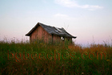
Постройка близо до Кара Дере - 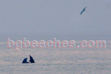
Двойка делфини
Делфин- 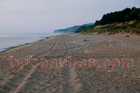
Края на юни - 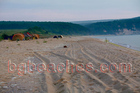
Края на юни 2 - 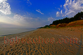
Бреговете на Кара Дере
Изгрев от Кара Дере- 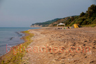
Към Бяла - 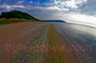
Пясък - 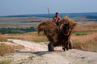
Каруца - 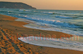
Картичка от Карадере - 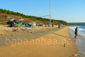
Бурно море - 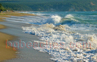
Големи вълни - 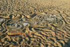
Арт - 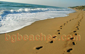
Две следи - 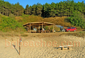
Бар Чамбао - 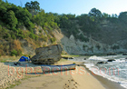
Рибарска лодка - 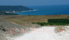
Панорама - 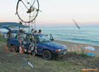
Дърва за огъня - 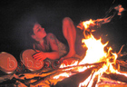
Жана - 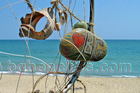
Пощенска картичка - 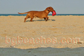
Любимец на плажа - 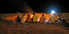
Огън пред бара - 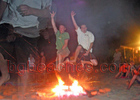
Скок - 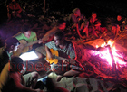
Край огъня - 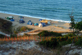
Палатков лагер в Карадере - 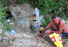
Извор - 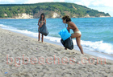
Еко - 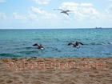
Карадерешките гларуси - 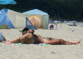
Нудисти - 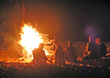
Друга снимка от огъня - 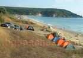
Изглед към плажа - 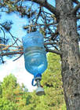
Душ - 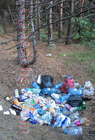
Боклук - 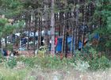
Гората - 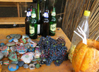
Бар Чамбао - 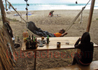
Разпускане в Бар Чамбао - 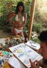
Еко коктейл - 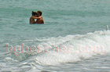
Любов - 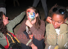
Бодиарт на Карадере - 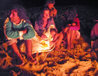
Спящо дете край огъня в Карадере - 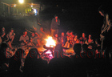
After party - 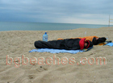
Хотела - 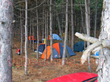
Палатки в гората на Карадере - 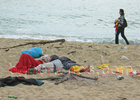
Контраст - 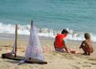
Деца - 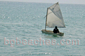
Платноходка